i
Asistente guiado
Cuéntame qué necesitas
Este asistente funciona con reglas locales. No envía información a servicios de IA.

Gestión sin código · Microsoft 365
Crea el formulario, sus reglas y la vista de resultados. Las definiciones publicadas quedan preparadas para SharePoint y Power Automate.
Asistente guiado
Este asistente funciona con reglas locales. No envía información a servicios de IA.
Configuración